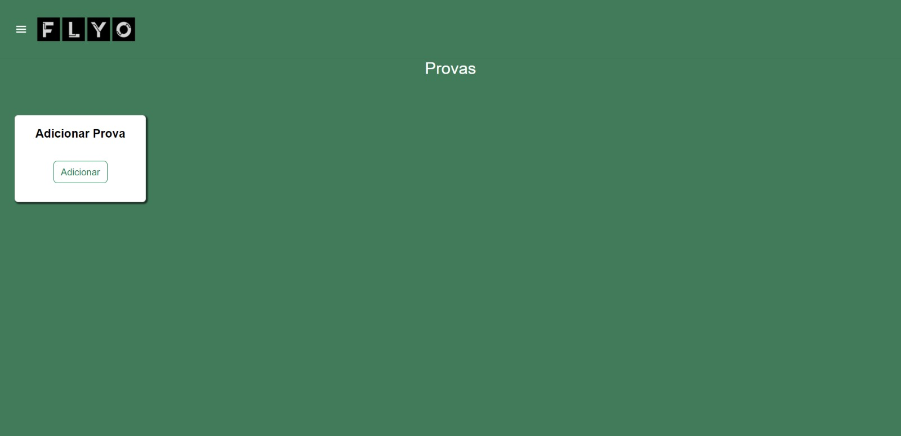
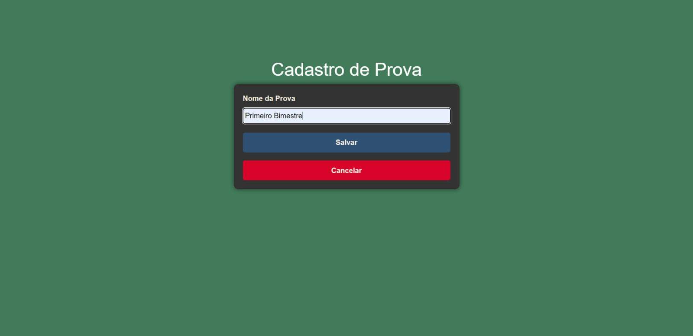
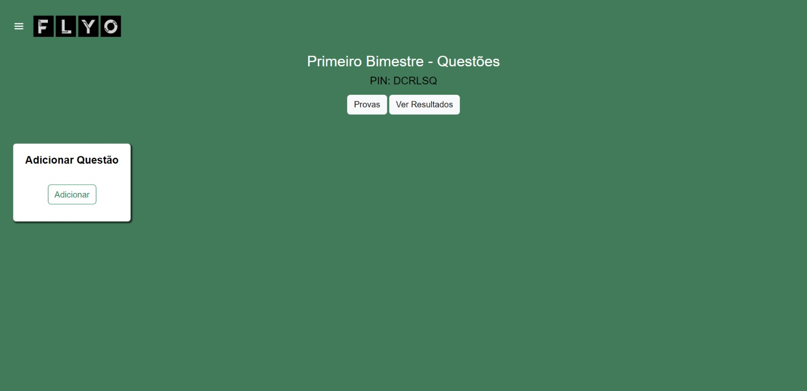
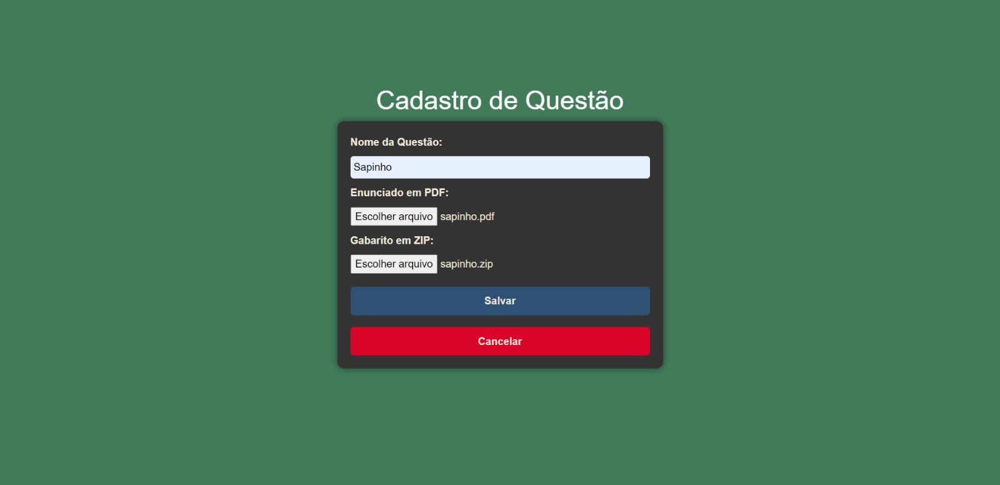
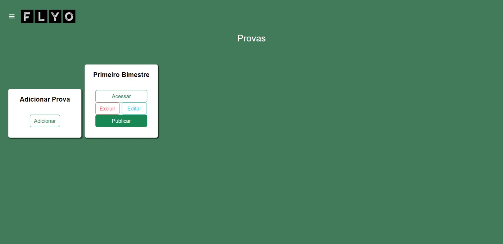
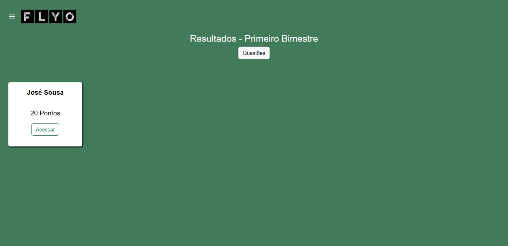
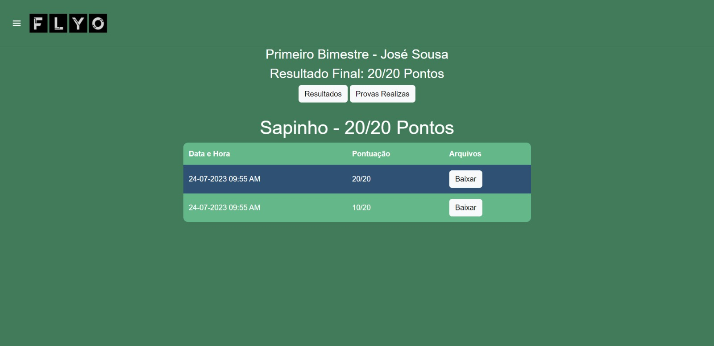

Passo a Passo | Professor
1. Para adicionar uma prova, clique em "Adicionar":

2. No cadastro, escreva o nome da prova:

3. Ao cadastrar será gerado um PIN, para que a prova possa ser acessada:
4. Para adicionar uma questão, basta clicar em "Adicionar", na caixa "Adicionar questão":

5. No formulário de cadastro, nomeie a questão e envie o enunciado em PDF e o gabarito em ZIP.

6. Clicando em publicar, a prova ficará disponível para os alunos submeterem suas respostas:

7. Clicando em ver resultados, aparecerá a lista de alunos que realizaram a prova:

8. E clicando em acessar, verá o histórico de submissão do aluno junto com a pontuação final:
